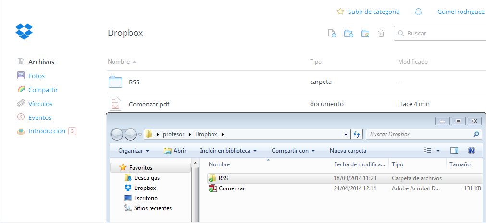
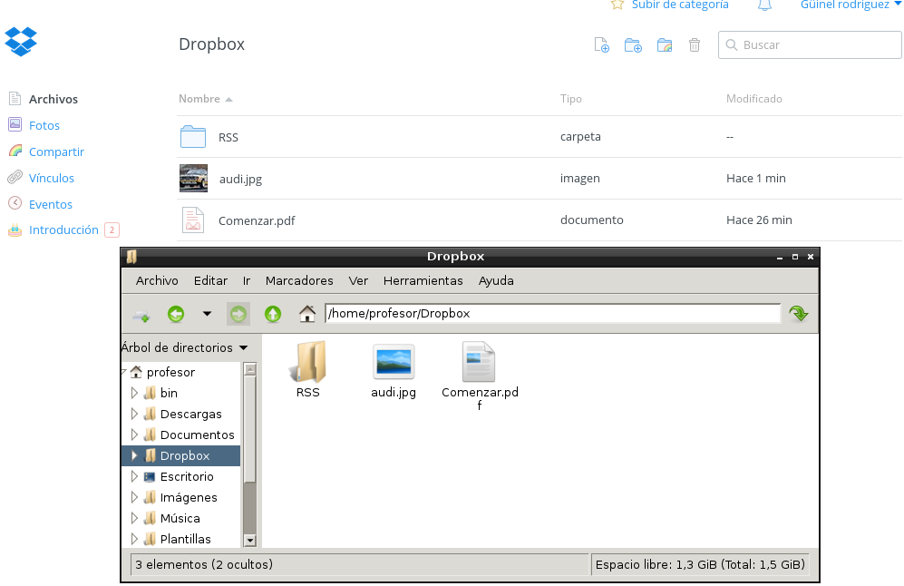

- Módulo: Fundamentos de Hardware.
- Título del trabajo Almacenamiento en la nube.
- Componentes del grupo: Güinel Rodríguez García.
- Curso Académico: 2013/2014
- Fecha de entrega: 24 de abril de 2014.
-En primer lugar nos documentaremos con los documentos proporcionado por el profesor.
-Una vez leida la documentación, comenzaremos entrando en la página del "dropbox".
-Dentro de la página nos descargamos el 'dropbox' y nos registraremos, este proceso de instalación nos creará una carpeta donde pondremos los archivos que queramos subir a la nube.
-Entramos en la nube para que se sincronice con la carpeta, y tendremos los archivos subidos.
-Buscamos en el Yast el 'dropbox' y lo instalamos.
-Después de instalado meteremos en la carpeta los archivos deseados para subir a la nube.
-Por último entramos en la página para sincronizarlo con la carpeta.
